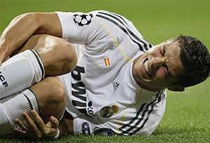

Cristiano Ronaldo
 De: La Frikipedia, la enciclopedia extremadamente seria.
De: La Frikipedia, la enciclopedia extremadamente seria.
| De la serie furbolistas de ayer y de hoy:
|
Cristiano Penaldo

|
|
|
| Cristiano Ronaldo ofreciéndose al Madrid
|
|
| Nacimiento
|
Cuando al desafortunado de su padre se le rompió el condón mientras le daba a su madre.
|
| Nacionalidad
|
 / / Nació en Aspaña, pero por equivocación salió Portugués Nació en Aspaña, pero por equivocación salió Portugués
|
| Demarcación
|
"Juego por donde quiero"
|
| Club actual
|
Real Mandril
|
Goles fallados marcados
|
DIje que preguntas de mi vida personal no
|
| Año de debut
|
2002
|
| Club de debut
|
GITANOYERS
|
| Llegó el dia que llegó a Aspaña
|
 Cristiano Ronaldo tras perder su virginidad anal.
«Me llamo Cristiano Ronaldo y uso clear men»
~ Cristiano Ronaldo en un comercial tan barato y chafa muy bueno de un shampopo shampoo bueno
«Me tienen envidia porque soy gay, rico y bueno»
~ Cristiano Ronaldo mirándose en el espejo mientras se maquilla.
«El balón de oro es para aficionados... como yo. Messi se merece uno de platino
haciendo gala de su humildada.»
~ Cristiano Ronaldo drogado diciendo la verdad
«Los aficionados españoles me pitan porque me tienen envidia»
~ Cristiano Ronaldo intentando ser optimista.
«¡Joderos hijos de puta!»
~ Cristiano Ronaldo dedicándole la victoria a los aficionados de la Real Suciedad.
«Hay que estar confiante. »
~ Cristiano Ronaldo mostrando su confianza
«Yo me merezco ser el 1º, el 2º y el 3º »
~ Cristiano Ronaldo Mostrando su humildad, tras quedarse fuera del podio del balón de oro
«¡Niñaaaa, tengo la' braga' de Güomen Sicrit a un leurooo!»
~ Cristiano Ronaldo en su anterior y exitoso trabajo como vendedor de mercadillo
«Ese portugués, hijo puta es»
~ Aficionado mostrando su aprecio al crack portugués
«Cristiano jugará en el Real Mandril»
~ MARCA cada verano (hasta que se hizo realidad)
«Cristiano jugará en el Far$a»
~ SPORT cada verano
«Los rumores de que tengo una relación sentimental con Dejan Lekic son mentira»
~ Cristiano Ronaldo intentando ocultar lo evidente
«Algún día jugaré en Aspaña»
~ Cristiano Ronaldo cuando le preguntan los medios aspañoles
«Cristiano, ¿por qué no dejas el Pro Evolution Soccer y jugamos al teto »
~ Pilar Rubio cuando Cristiano viene a España
«Iré al Mandril si paga lo que dice»
~ Cristiano sintiendo los colores
«Soy el jugador número 1, 2 y 3 del mundo»
~ Cristiano en un ejemplo de su humildad
«Sé que valgo 94 millones... o más»
~ Cristiano en una conferencia sobre la crisis económica y el dinero
«Sigue, sigue, sigue... ohh... sí...»
~ Cristiano Ronaldo de fiesta madrileña con Guti y su Puta Pilar Rubio
«Cristiano tiene una potencia que no veía desde Roberto Carlos, da gusto ver como las mete»
~ Guti sobre Cristiano
«Vamos a ganar Copa, Liga y Champions»
~ Cristiano Ronaldo antes de que Alcorcón y Lyon eliminaran al Mandril
«Vamos a demostrar al Lyon que en el Bernabéu manda el Madrid»
~ Cristiano Ronaldo antes de que el Lyon eliminara al Mandril de la Champions [1]
«Yo estoy confiado de que vamos a ganar el partido frente al Barcelona en el Bernabéu y que también vamos a ganar la Liga»
~ Cristiano Ronaldo volviendo a jugar a ser adivino (y volviendo a fallar [2])
«En el Madrid me he sentido frustrado y triste»
~ Cristiano Ronaldo después de una temporada en blanco
«¡Calma calma noo haci no!»
~ Cristiano Ronaldo dando sexo clases en el auto
Cristiano Juan de Dios Messías Ronaldo dos Santos Aveiro, más conocido como Cristiana Ronalda, conocido por llorar cuando no tiene la pelota Cristiano Ronaldo (5 de febrero de 1985), zeerreziete (ZR7), Gitano Ronaldo, GR7, Mark Lenders o Cracktiano Rumiando es un futbolista hispano-portugués que tiene el gran don de regatearse hasta el público. Cada verano está en todos los grandes equipos de Europa. Sonaba para el Real Mandril y ha acabado siendo verdad (no como los Cesc, Agüero... hasta el humilde jugador de la cantera del Vidal i Barraquer, Miquel Angel Ortiga [3]).
Biografía
Cristiano Rui Joao Mendes Da Silva Bebeto Ronaldo (apodado tambien, "El pata negra", "El hombre que pide calma" y según los canticos del publico en multiples ocasiones, "Hijoputa") es un jugador de futbol que juega actualmente en el Real Mandril de futbol. Se dice que nació en Oporto (Portugal), pero realmente es un experimento de tito Floren, llevado a cabo por sus esbirros en el laboratorio de fechorías del Real Mandril en Alcobendas. Previamente al equipo mandrileño, "El pata negra" ha jugado en el Despotorring de Lisboa y el Winchester United, donde ya ha hecho gala de su chulería y sus tupés con gomina barata del Lidl. Fruto del destierro del "Pata Negra" por parte de Tito Floren al Despotorring, debido a su escasa formalidad y a sus multiples gastos en gomina y cera para depilarse el vello anal, Tito Floren tuvo que desembolsar la cantidad de 96.000.000 de tazos, dos clips y un escudo del Almeria UD.
En realidad C. Ronaldo nació del fusión de las bases de messi y maradona, por un usuario del fifa incapaz de ganar 2 partidos seguidos en clase principiante , en un momento de desesperación. Se cree que fue un gitano de la iglesia cristiana y que utilizó una foto suya para hacer la cara. Pero como no tenía estudios, pues en vez de ponerle la banderita de Aspaña en la nacionalidad le puso la de Portugal (de ahí la tendencia de Ronaldo a decir "Algún día jugaré en Aspaña").
El azar (o dios , no está claro aún) quiso que tras una tormenta electromagnética, una lluvia radioactiva y una fisión (investigaciones posteriores han señalado como culpable a un tal H. J. Simpson) los bits del jugador tomaran vida propia. Ronaldo salió del juego como un ente cibertrónico pasa ser el elegido. Vive en la "pleisteishon", y sólo sale de la misma para jugar al fútbol y follar con putas pasear con su putasnovia.
Debutó Sporting de Labadora en 2002, pero el primer equipo en el que jugó fue el GITANOYERS, la versión en el Manchester Te Da Porculo , cuando empezó a demostrar su herencia genética. Ronaldo se dio cuenta que con solo pulsar su botón L2 interno era capaz de regatear a cualquiera.
Desde entonces no ha parado de romper cinturas, rodillas, tobillos , alguna que otra cara y dar por culo a muchas chavalas FIFA 08 (recordemos que Ronaldo nació del juego) es el mayor honor que podía recibir. Es más, el jugador que le representa en el juego no es más que un clon suyo incluido en el juego mediante un invento del aspañola, EL PAIS DE LOS GITANOS!!)
En la actualidad, "el pata negra" tras ser vencido por cuarta vez por su maximo rival MESSIAS consiguiendo el balon de oro, opta junto al otro astro portugues de la actualidad, Evaldo, por el BALON DE MIERDA, la maxima condecoracion futbolistica que puede recibir un futbolista portugués. Todas las encuentas ven como favorito a Evaldo y su evaldinha, que está revolucionando el juego del Depor y todo el futbol mundial. Ante esto, actualmente se situa a Cristiano en alguna cuneta de alguna comarcal de Albacete vendiendo toallas y naranjas a los camioneros gayers que pasan por ahi, amén del trafico de estupefacientes.
Frases célebres de Cristi-ano Ronaldo
- Soplaré y soplaré y tu peinado destrozaré, Messi, eres un barato.
- Aunque seas mejor que yo intentaré disimularlo, ¿eh tonto?
- Aaaaaaaah!!! Se me ha caido un pelo.
- No lloré tanto desde que me depilé los wevos con super-glue.
¿Sabías que...?
Cristiano intentando recuperar el balón
Resultado de intentar quitarle el balón a C. Ronaldo
Portero estándar ante un disparo de Cristiano
- queria ser miss portugal pero solo aceptaban mujeres?
- Lionel Messi es mucho mejor que este?
- Trabajó en una fábrica de bicicletas durante toda su vida para ganar algo de dinero extra hasta fichar por el Real Mierda.
- Te regala su camiseta si se lo pides?
- En su infancia recogia
penes balones por 5 euros?
- Cristiano Ronaldo es el mejor del mundo, por encima de Kaká y Messi... o eso piensa, ya que trucó el PRO para tener 99 en todo?
- Cristiano Ronaldo es el mejor del PRO?
- Cristiano Ronaldo no sabe conducir?
- Cristiano Ronaldo es el único portugués que Loulogio sabe imitar??
- Cristiano Ronaldo cobrará un cojón más del cojón que ya cobra en el Real Mandril?
- Cristiano Ronaldo cobra por cada nuevo PRO que sale a la venta?
- Cristiano Ronaldo siempre tendrá enamorados y fans gays que quieren ser como él... incluyendo a hombres que les guste además de ser futbolista
eso te incluye a tí, fanboy!!?
- Cristiano Ronaldo también se monta farras al estilo Robinho?
- Cristiano Ronaldo no sólo es deseado por muchas mujeres, sino también por muchos hombres (presidentes, entrenadores, aficionados...)?
- Cristiano Ronaldo no consigue un seguro automovilistico para sus ferraris.
- Cristiano Ronaldo nunca será derrotado en el PRO porque ÉL es el PRO?
- Cristiano Ronaldo tiene la misma obsesión por los dulces que Ronaldo, pero éste nunca engorda al estar formado por bits?
- Tras Mamón Calderón fue Cristiano Ronaldo?
- y Cesc?
- y Agüero?
- y sólo Cristiano acabó jugando de blanco (color de la chele) ?
- Cristiano Ronaldo sólo se fue al Mandril porque pagaba lo que decía?
- El primero equipo de Ronaldo fue el Jerez 4Ever Utd?
- Cristiano Ronaldo nació de un pique de un usuario del PRO que no había ganado nunca?
- A partir del nacimiento de Cristiano, el usuario no volvió a perder?
- Si utilizas a Cristiano en el PRO, no puedes perder?
- Cristiano Ronaldo fue criado en una selva de esas de África donde se ponen unos aros que les alargan el cuello y así ha quedado el pobre
Migué C.Ronaldo?
- Su cuello mide 2 metros de perímetro y 20 de largo?
- La novia de C. Ronaldo no quería que vaya al Mandril porque
echó un polvo tuvo un lío con Sergio Ramos [4]?
- Cristiano Ronaldo ganó el Balón de Oro? Cuando se veía venir Cuando ya era oficial
- Cristiano Ronaldo es el ídolo de los Canis?
- Cristiano Ronaldo es gay? [5]
- A Cristiano Ronaldo ha sido fichado por Florentino Pérez (la primera vez que oigo su nombre) a cambio de un kilo de Choped?
- Si intentas quitársela a Cristiano Ronaldo, puedes pillar una Chucknorritis grave?
- Es un robot bionico mezcla de un seat y un conejo?
- Es maricón de nivel 20?
- Cristiano Ronaldo es un Dios para el Marca y Tomás Roncerdo?
- Estoy harto de que me pregunten que si soy compatible con Ronaldo en las ventanitas de publicidad de la frikipedia?
- CR9 sabe volar?
- Cristiano Ronaldo es el padre de Robocop?
- Cristiano Ronaldo es la fusión entre Goku y Vin Diesel?
- Cistiano Ronaldo es un transformer?
- Cistiano Ronaldo no duerme, sólo chuta
- Los abdonimales de CR9 nacieron antes que él?
- CR9 es mejor que Maradona y peor que Mágico González?
- CR9 mató a Mágico González de un cañonazo al enterarse de que éste era mejor que él?
- El maestro que le enseño a Cristiano el Tomahawk fue Juanba
- Cristiano Ronaldo no sabe quien es Chuck Norris?
- Oleguer tiene las mismas Champions que Cristiano Ronaldo?
- Cristiano Ronaldo tiene síndrome de Down?
- El Madrid consiguió retener a Cristiano dejándole elegir la segunda equipación (la fuxia)?
- Se avecina pelea de chicas en el Madrid ahora que Gareth Bale se ha puesto mazao y una diadema en el pelo
- Cristiano Ronaldo aprovecha sus vacaciones para irse a japón a entrenar su músculos faciales metiéndose "cosas" por la boca?
Hechos sobre C. Ronaldo
- Cristiano Ronaldo no se sabe cortar las uñas, le paga a alguien para que lo haga
- Cristiano Ronaldo le pregunta a su espejo quién es el más bello del mundo cada día al levantarse.
- Cristiano Ronaldo vive en la PlayStation. Pasa el tiempo jugando al PRO y creando nuevos regates.
- C. Ronaldo se ha echado novia en la vida real porque estaba harto de tanto follarse a Lara Croft.
- C. Ronaldo no tiene corazón, pulmones ni ningún organo interno. Destro de su pecho tiene un SAI que le mantiene con vida.
- C. Ronaldo no se cansa, sólo necesita vaciar los recursos de la memoria.
- Oliver Atontao está basado en la infancia de C. Ronaldo.
- C. Ronaldo es capaz de hacer cualquier regate, por difícil o complejo que parezca, con sólo pulsar su botón R2 interno.
- En realidad, todos los regates fueron inventados por C. Ronaldo.
- Mientras Ronaldinho creó la elástica, C. Ronaldo invento la rígida. La bautizó así por como tenían que llevar la columna durante meses los defensas contrarios.
- C. Ronaldo es capaz de vencer a un ejército de Terminator con sólo un balón a base de romperles la cintura.
- El anuncio de la Eurocopa de Cuatro esta basado en los entrenamientos de C. Ronaldo.
- La única manera de parar a C. Ronaldo es con un IE o usando firefox.
- Si pones futbolista travesti del Mandril en Google sale su nombre.
- C. Ronaldo y Kaká nunca podrán estar nunca en el mismo equipo. La calidad desprendida por ambos implosionaria el universo en infinitas partículas microoscopicas. Solo sobrevivirian ellos dos.
- En el anuncio de Adidas cambiaron el guión original por el que actualmente se emite. La verdadera frase de Mourinho es: "No intenteis ser como C. Ronaldo. Si intentárais hacer una décima parte de los regates que hace él acabaríais con una doble fractura de tibia, peroné, rótula, menisco, tendón rotuliano, fémur y tobillos de ambas piernas. Él es Dios y vosotros solo 'gusanos'"
- En realidad C. Ronaldo aparecía en la serie Mark Lenders. Cuando se entero que no era el personaje principal se pintó la cara de blanco y empezó a jugar de rodillas. Le cogieron como personaje principal.
- La demarcación en la que más le gusta jugar a C. Ronaldo es la de mediolateralcentrodelantero
- C. Ronaldo ni come, ni respira, ni duerme. Toma la energía que desprenden sus rivales cuando les rompe la cintura y la usa como combustible fósil.
- La madre de C. Ronaldo quiere que vaya al Real Mandril antes de morir.
- Y su abuela, también.
- Su tía no está muy de acuerdo, pero no puede opinar, sólo es un lectora de PS2.
- En realidad C. Ronaldo odia al FIFA.
- Cristiano Ronaldo dirige en secreto el Cambrils, con ese gran jugador Miguel Angel, nuestro 2 dios despues de Chuck Norris.
- Cristiano se hace 3000 abdominales en 2 minutos y antes del partido se hace 2 porque cuando marca se hace 3001.
- Actualmente está en trámites de divorcio con Belén Esteban.
Estadísticas del C. Ronaldo original del PRO
Estas son las estadísticas de C. Ronaldo cuando fue creado en el PRO, antes de tomar vida.
Rasgos Base
Posicion: DC, DL, SD, MP, CCR, CCI, DD, DI, MC.
Ambas bandas, PD.
Es tan bueno que vale para todo el hombre.
Estadísticas
- Liderazgo 999 ( si no es el capitán no juega )
- Ataque 24.000
- Defensa 0
- Estabilidad 99
- Resistencia 99
- Vel. máxima 99
- Aceleración 99
- Respuesta "NO"
- Agilidad 99
- Prec. c. 99
- Vel. c. 99
- Prec. p. c. 99
- Vel. p. c. 99
- Prec. p. l. 99
- Vel. p. l. 99
- Precisión en el tiro 99
- Potencia en el tiro 99
- Téc disp 99
- Prec. saq. falta 99
- Efecto mariposon 99
- Cabezazo 99
- Salto 99
- Técnica 99
- Agresividad 99
- Mentalidad 99
- Cualidades de portero -99
- Tra. equipo -33
- Estabilidad 8
- Prec. pie malo 8
- Frec. pie malo 8
- Mariconeria 100
- Res. lesio. Ayy -99 ( Lo fichas y se lesiona )
- Conducción Ferrari (aunque los estrelle)
- Tamaño del nepe -99 (su tamaño compensa sus otras cualidades)
- Estas estadisticas entan basadas en el PRO EVOLUTION SOCCER
Habilidades especiales
- Regate
- Regate +
- Regate + +
- Regate + + + +
- Regate + + + + + +
- Regate + + + + + + + +
- Hab. regate
- Cap. Posic
- Reacción
- Hab. goleadora
- Hab. gol 1 a 1
- Exterior
- Líneas
- Disparos medios
- Centro
- Disparos a la escuadra + + +
- Disparos de larga distancia a la escuadra + + + + +
- Estrellarse con Ferraris + + + +
- Ser g$&%#$%%*@ +++++++++++++++++++++++++++++++++++++++
- Ir de chulo +++++++++++++++++++++++++++++++++++++++++++++++++++++++++++++++
- Dar por culo a putas
- Saber que nadie es más friki que VZ
- Quitarse la camiseta
- Quitarse la camiseta + Tarjeta roja
- Tocarse los cojones en los partidos de furbo y en la calle
- Escupir a los cámaras ++++++++++++++++++++++++++++++++++++++++++++++++++++++++++++++++++++++++ [6]
- Pegar porrazos y romper narices ++++++++++++++++++++++++++++++++++++++++++++++++++++++++++++++++++++++++++++++++++++++++++++++++ [7]
- No bajar a defender ++++++++++++++++++++++++++++++++++++++++++++++++++++++++++++++++++++++++++++++++++++++++++++++++++++++++++++++++++++++++
- Empujar a Pepe Guartrola
- Violar hooligans ++++++++++++
Enlaces externos
Autor(es):
- Fordus
- Frikiman
- Aque
- Aram
- Roms
- Azulejos
- Crackfabian
- Conan
- Cot Cansino
- PaladinImperial
Frikipedia 2005-2016, Licencia
GFDL 1.2 - Extraído por FrikiLeaks
![[2]](http://www.elcigala.net/imagenes/mandril/zass5.jpg){kind=link}
{kind=link}
{kind=link}
{kind=link}
{kind=link}
{kind=link}